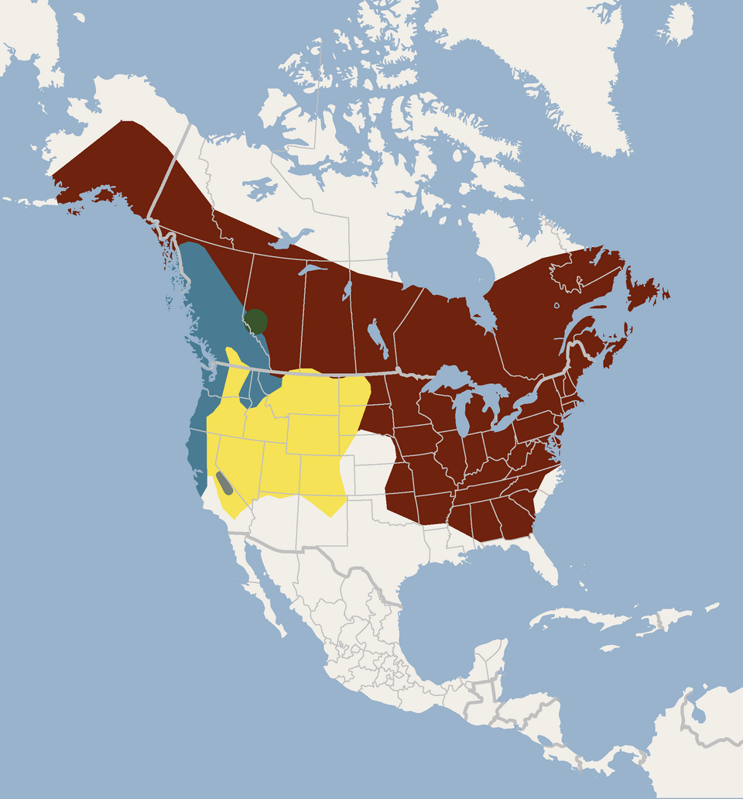

Quick Facts
- Body length: About 2.5-4 inches
- Weight: About 5-14 grams
- Lifespan: 6-10 years; Some exceed 30 years.
- Conservation: Least Concern globally; Endangered in the US
- Range: Much of Canada and the United States
Key Nighttime Adaptations
Little brown bats use echolocation to navigate and find insects in darkness. The bats' large ears give them incredible echo location capabilities. This guides their movements as they fly and helps them locate food invisible to the eye in the dark of the night.
Diet
They are insectivores that forage after sunset, often over water. A bat can eat hundreds of small insects in a night.
Role in Ecosystem
By consuming insects, little brown bats are part of the natural controls on insect populations. These bats are not the top of the food chain however. They are a food source for owls and hawks.
Fun Fact: Males consume their own body weight in food every day, nursing females can consume even more.


Light Pollution's Effect on Little Brown Bats
The little brown bat is especially susceptible to the effects of light pollution, as they can be confused as to when dusk actually begins, leading to major disruptions in their foraging and navigation patterns. Artifical lights concentrate insects around them, attracting bats and exposing them to predators.